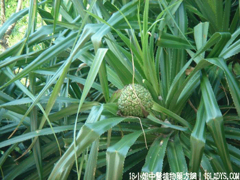

(本文解释权归中药材天地网兄弟站-18小姐中医植物药方网所有,如需转载请注明出处)
路兜簕(中药材植物名:路兜树)(植物科目:路兜树科)

别名：老锯簕、假菠萝、婆锯簕。
植物名：路兜树。
生长环境：本品为直立、分枝的灌木或乔木。喜生于滨海地方。
分布：广布于亚洲热带至太平洋群岛。我国南部沿海地方常见。
入药部分：根。
采集期：全年采根、秋冬采果。
自采地点：荒地、山边。
性味：性凉、味淡。
功能：清大热、平肝火。
主治、用量和用法：1、癍痧发热：用干根1至2两，清水煎服；2、夹色伤寒：用干根1至2两，清水煎服；3、眼热，眼起红筋：用干根1至2两，清水煎服。
验方（治癍痧发热方）：路兜簕根、鸭脚树皮、蛇泡簕根、金盏银盘、倒扣草、各5钱，清水四碗煎成一碗服。
（方解）鸭脚树皮能疏散在表之邪；蛇泡簕、金盏银盘能清里热；助以路兜簕其力更强而有解热毒作用，益以倒扣草治往来寒热邪在半表半里者；此方立法用于风热盛而须清解表里。并有少阳症见之癍痧热症为宜。
（方歌）癍痧发热路兜根，鸭脚树皮泡簕根，金盏银盘倒扣草，疏散风邪解热气。
附录：（果）1、治癍痧发热：干用1两至于、两半，清水煎服。2、治胃痛：用法同上。3、治小肠气：干用1至2两，清水煎服。
(本文解释权归中药材天地网兄弟站-18小姐中医植物药方网所有,如需转载请注明出处)